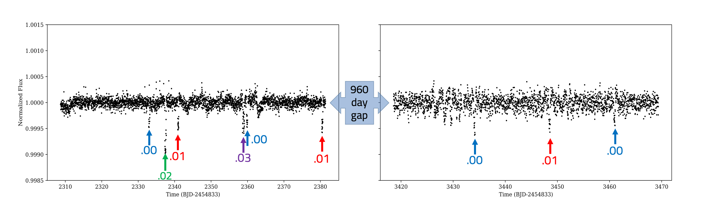
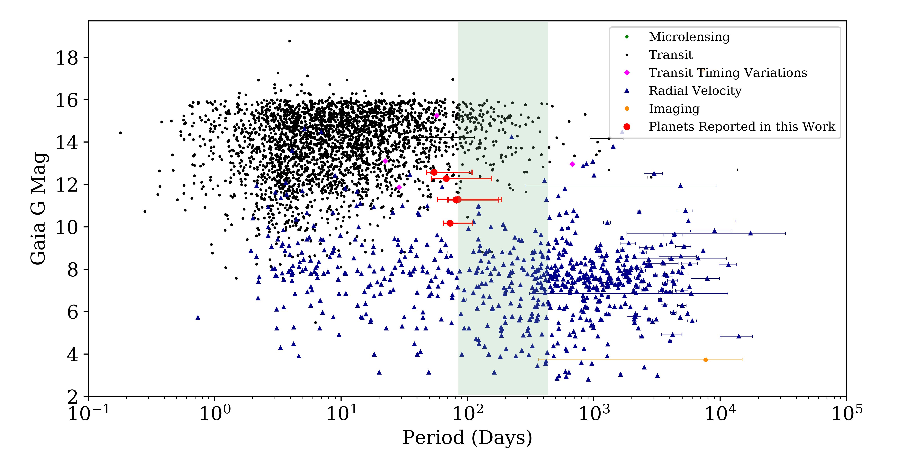

{kind=link}
{kind=link}
{kind=link}
About
Hi there! My name is Shishir, and I'm a fan of all things astrophysics. My research mainly focuses on detecting and characterizing exoplanets with space telescopes. I also enjoy making sciencey things, playing badminton, and astrophotography.
How to Find and Characterize Long Period Planets In K2 and TESS
One of the greatest challenges of modern exoplanet astronomy is that it is much harder to discover and characterize longer-period (more than 30 days) exoplanets with current instruments. From Kepler’s laws of orbits, we know that longer period planets orbit their stars farther away and are cooler, more temperate, and more likely to be habitable. Unfortunately, the most prolific current space telescope that can detect exoplanets, TESS, observes most of the sky for only 30 days. For reference, Mercury, the innermost planet in our own solar system, takes about 80 days to make a complete orbit around the Sun. If there were an exoplanet system out there identical to our solar system, the most advanced current planet finders would miss every single planet.
Although this sounds very glum, there is a loophole we can use to solve this problem! Even though these telescopes observe the sky for a very short period of time, they occasionally will reobserve the same patch of sky later. For example, in April of 2015 the K2 Mission observed a patch of sky around the Beehive Cluster for about 75 days. After nearly a thousand day gap, the telescope wandered back to the same patch of sky for another quick 75 day observation. Later still, that same patch of sky was observed for a third time.
In just this one region of sky, there were more than 6000 stars that were observed over a three year span. Surely we can now use this to find planets with year-long periods, right? Unfortunately, there’s a catch. Because our observation had gaps in between, we don’t know how many transits we missed in the gaps. Without knowing this, we don’t know the period of the planets and we don’t know the temperature on their surfaces, so they aren’t worth much. The challenge my brother and I took on was to try and identify how many transits we might have missed, thereby pinning down the period as best we can.
The key to identifying the correct period is to fold in our prior information of the situation. Without even looking at the data, we already know that we are much less likely to detect a long period exoplanet than a short period one. To understand why this is the case, we can take an analogy from birdwatching. Let’s say you go out into your backyard only twice a year and happen to observe a particular bird both times. It’s more reasonable to assume that this bird frequents your backyard than it is to believe that this bird has only ever been to your backyard twice. Similarly, if you observe the sky for three short sessions over a few years and observe two transits, it’s much more likely that there were many transits you missed. In this paper, we found a new way to mathematically express this as a prior probability. There’s also other prior information we have; for example, longer period planets are more likely to have longer transit durations. With some physics, it’s possible to express that mathematically as well. Once you take all of the prior information you know, you can apply it to the data and get accurate statistical distributions for what periods are more and less likely. All that remains from here is to follow-up these planets, starting from the most likely period.
In the first observation from April 2015, a citizen scientist had flagged certain possible single transits. We decided to focus on this list to see if any of these stars would show another transit in a subsequent observation -- and we found six of them that did! The next step was to apply our method in order to find the distributions of periods for each of the planets. For five of them, we were able to get beautiful period distributions showing that some periods were far more likely than others, a very valuable asset for future follow-up observations.
The sixth system turned out to be particularly interesting. With the benefit of the full data, we figured out that the transits we were seeing didn’t just belong to one planet -- there were four. In fact, we were able to identify the order of the planets and the exact period for two of them. For the other two, we only have distributions. Excitingly, one of the planets has a significant probability (about 40%) of being in the habitable zone of its sun-like host star. This system turned out to be a perfect example of how leveraging these overlapped observations can yield fascinating and tantalizing new planet systems.
The systems we present in this paper have periods longer than the vast majority of planets found with the transit method. Crucially, they orbit stars that are comparatively very bright in our night sky, which makes them excellent candidates to further study with huge ground-based observatories. With planets this bright, it’s very possible to find the exact period and even study the atmospheres. The graph below shows the exoplanets that have been discovered so far, with these five systems (excluding the multiplanet system) in red. For reference, the highlighted green zone is the region between Mercury and the Earth’s orbital periods -- a region of particular importance. This technique allows us to finally push into this territory with the transit method. Since we first published this, the K2 Mission has retired, passing on the torch to its little cousin TESS. TESS observes for even less time than K2, but it has significant amounts of overlap and re-observation as it scans the sky. With TESS, I expect a whole trove of these kinds of planets from all over the sky, and I can't wait to apply this method to see what's out there.
